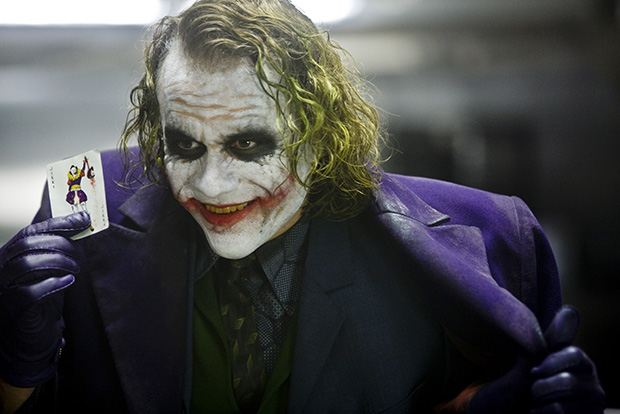
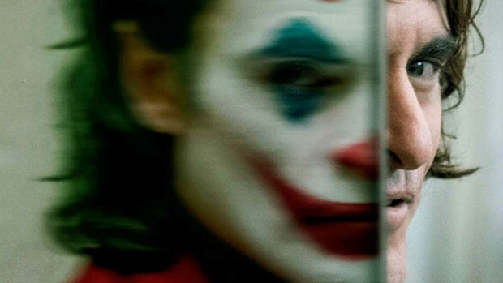
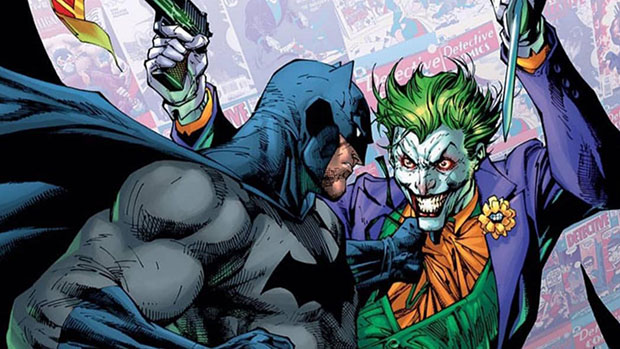
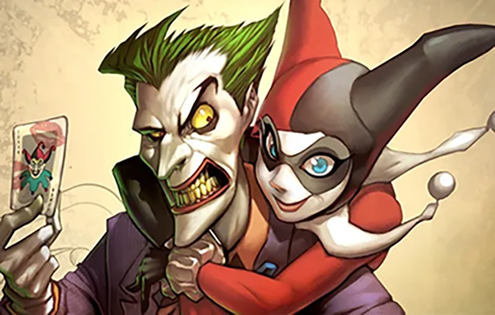

The Joker was created during 1940 by illustrator Bob Kane and the writer of the joker was Bill Finger. The Joker is in the DC Comic book Batman. This comic takes place in Gotham city in the year 1981. Gotham city is based on two cities in the US, New York and Chicago. The Joker has varied in age and no one is quite sure how old he is but people do believe that he is between 25-59 years of age.
The Joker is described as a manic clown, psychopath but people also think that he has an antisocial personality disorder with an uneasy smile. This disorder causes him to smile and laugh uncontrollably in certain situations. He always finds a way to get what he wants by usually threatening them. The Joker is a scary, uneasy, sneaky man.
The joker has a stealthy way of tricking people into precarious situations. He is good at making up plans to stop batman. He is good at making people uncomfortable. The Joker is also a criminal mastermind.
The clown prince himself didn't have too many friends that you can see during the comics or movie but did have one girl that would do anything for him Harley Quinn, but the Joker did partner with the Riddler, and penguin. The only person that he had regular interactions with was Harley Quinn.
My favorite quote from the Joker is “I talk, I smile, I laugh, but be careful when I'm silent”